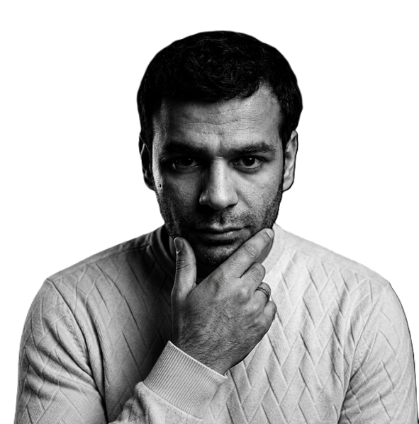

University of Alberta · Advanced Materials · Characterization · Research

I am a Ph.D. researcher in Materials Engineering at the University of Alberta, with a background that started far away from traditional engineering pathways. Originally trained in physics, I gradually moved toward materials science, where I found myself more fascinated by how materials behave, fail, degrade, and survive under extreme environments than by equations alone.
My work combines experimental research, advanced characterization techniques, thermodynamic modeling, and scientific analysis to better understand material behavior. I spend a large part of my life around furnaces, microscopes, diffraction patterns, vacuum systems, experimental setups that refuse to cooperate at 2 a.m., and simulations that work perfectly only after several emotional breakdowns.
Over the years, I developed strong interests in advanced materials, characterization methods, synchrotron science, and scientific visualization. I enjoy transforming complicated scientific concepts into clean visual stories, whether through research figures, simulations, presentations, or experimental imagery.
Outside research, I enjoy photography, travel, trains, landscapes, long walks, scientific discussions that accidentally become philosophical debates, and occasionally pretending that debugging experimental systems is not personal. I also have a strange ability to become excited about diffraction peaks, microstructures, and oxidation layers that most normal people would never notice.
This website is both a professional portfolio and a personal archive — a place to document research, projects, scientific tools, conference experiences, experimental work, and fragments of the journey through academia, engineering, and life in Canada.
SEM, EDS, XRD, and advanced analytical methods for studying material degradation and microstructure evolution.
Exploring alloy behavior, phase stability, oxidation, and material performance under extreme environments.
Thermodynamic calculations and computational tools for understanding material systems and reactions.
Research images, microscopy results, experimental setups, conference moments, scientific visualizations, travel photography, and selected moments from academic life will appear here.
Surface characterization and elemental analysis of materials and degradation products.
Phase identification and crystallographic analysis of alloys and oxides.
Thermodynamic modeling for materials systems and phase stability.
A collection of moments from academic life, travel, Canada, conferences, research experiences, photography, landscapes, trains, and the strange balance between engineering and life.
Email: alawamle@ualberta.ca
Phone: 001 (825)966-9050